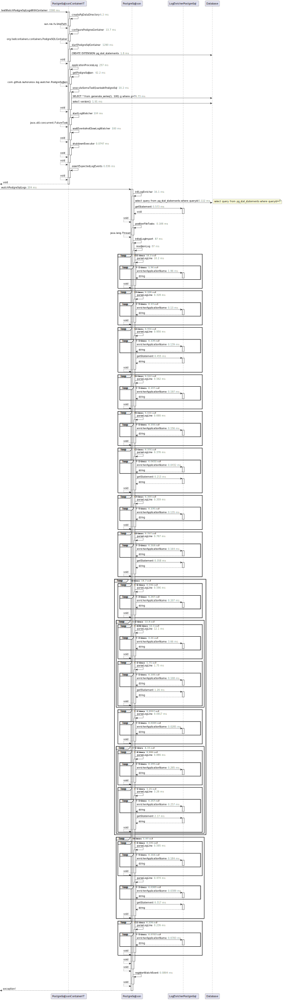

Class PostgreSqlJsonContainerIT
java.lang.Object
com.github.isuhorukov.log.watcher.PostgreSqlJsonContainerIT
-
Field Summary
FieldsModifier and TypeFieldDescription(package private) de.dm.infrastructure.logcapture.LogCapture -
Constructor Summary
Constructors -
Method Summary
Modifier and TypeMethodDescriptionstatic voidapplicationProcessLog(org.testcontainers.containers.PostgreSQLContainer<?> postgresContainer, Path pgData) static voidassertExpectedLogEvents(de.dm.infrastructure.logcapture.LogCapture logCapture1) static org.testcontainers.containers.PostgreSQLContainer<?> configurePostgresContainer(Path pgData) static PathcreatePgDataDirectory(Path tempDir) (package private) static voidexecuteSomeTestQueriesInPostgreSql(org.testcontainers.containers.PostgreSQLContainer<?> postgresContainer) (package private) static PostgreSqlJsongetPostgreSqlJson(org.testcontainers.containers.PostgreSQLContainer<?> postgresContainer, Path pgData) (package private) static voidshutdownExecutor(ExecutorService executorService) startLogWatcher(ExecutorService executorService, PostgreSqlJson postgreSqlJson) static voidstartPostgreSqlContainer(org.testcontainers.containers.PostgreSQLContainer<?> postgresContainer) (package private) voidtestWatchPostgreSqlLogsWithContainer(Path tempDir) Tests the functionality of watching PostgreSQL logs using a Docker container.(package private) static voidwaitEventsAndCloseLogWatcher(PostgreSqlJson postgreSqlJson, Future<Integer> resultCode)
-
Field Details
-
logCapture
@RegisterExtension de.dm.infrastructure.logcapture.LogCapture logCapture
-
-
Constructor Details
-
PostgreSqlJsonContainerIT
public PostgreSqlJsonContainerIT()
-
-
Method Details
-
testWatchPostgreSqlLogsWithContainer
Tests the functionality of watching PostgreSQL logs using a Docker container.This test sets up a temporary directory for Postgres data and log files, configures a PostgreSQL Docker container to log in JSON format, and verifies that the application correctly processes these logs.
The test uses a
PostgreSQLContainerfrom the Testcontainers library to run a PostgreSQL instance with specific logging configurations. It evaluates whether thePostgreSqlJson.watchPostgreSqlLogs()method can detect and process log entries in the specified directory.- Parameters:
tempDir- a temporary directory provided by JUnit for test file storage.

-
applicationProcessLog
public static void applicationProcessLog(org.testcontainers.containers.PostgreSQLContainer<?> postgresContainer, Path pgData) throws SQLException, InterruptedException, IOException -
createPgDataDirectory
- Throws:
IOException
-
configurePostgresContainer
public static org.testcontainers.containers.PostgreSQLContainer<?> configurePostgresContainer(Path pgData) -
shutdownExecutor
- Throws:
InterruptedException
-
waitEventsAndCloseLogWatcher
static void waitEventsAndCloseLogWatcher(PostgreSqlJson postgreSqlJson, Future<Integer> resultCode) throws InterruptedException, IOException - Throws:
InterruptedExceptionIOException
-
startLogWatcher
@NotNull static @NotNull Future<Integer> startLogWatcher(ExecutorService executorService, PostgreSqlJson postgreSqlJson) -
startPostgreSqlContainer
public static void startPostgreSqlContainer(org.testcontainers.containers.PostgreSQLContainer<?> postgresContainer) throws InterruptedException, IOException - Throws:
InterruptedExceptionIOException
-
getPostgreSqlJson
static PostgreSqlJson getPostgreSqlJson(org.testcontainers.containers.PostgreSQLContainer<?> postgresContainer, Path pgData) -
executeSomeTestQueriesInPostgreSql
static void executeSomeTestQueriesInPostgreSql(org.testcontainers.containers.PostgreSQLContainer<?> postgresContainer) throws SQLException - Throws:
SQLException
-
assertExpectedLogEvents
public static void assertExpectedLogEvents(de.dm.infrastructure.logcapture.LogCapture logCapture1)
-